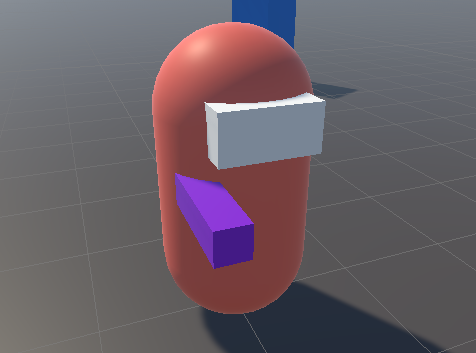
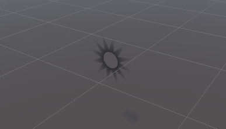
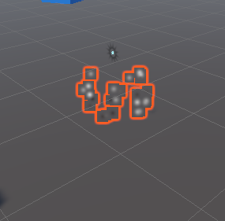
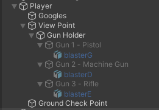

Shooting & Weapons¶
Shooting¶
- In order for the
playerto shoot, add the following in thePlayerControllerscript:
void Update() {
// ..
// Shoot if player left clicks
if (Input.GetMouseButtonDown(0)) {
Shoot();
}
// Handle the mouse in windowed mode
// ..
}
private void Shoot() {
// Create a new ray that goes from the center of the screen outwards.
Ray ray = playerCamera.ViewportPointToRay(new Vector3(0.5f, 0.5f, 0f));
// Set the origin of the ray to the position of the player's camera.
ray.origin = playerCamera.transform.position;
// If the raycast hits an object in the scene...
// out passes by reference allowing 'hit' to be populated with return values
if (Physics.Raycast(ray, out RaycastHit hit))
{
// ...output the name of the object to the console.
Debug.Log("We hit " + hit.collider.gameObject.name);
}
}
- Add a
cubeas a child of theView Pointto represent theGun Placeholder - Add a
materialto theGun Placeholder - Remove the
Box Collidersfrom both theGogglesand theGun Placeholder

Creating Impact Effect¶
Bullet Impact¶
- Create a
quadobject in the game world to represent the bullet impact. - Create a empty parent object called
Bullet Impactand add thequadto it - Duplicate the
quadobject and rotate it180degrees so quad has two sides - Create a material for the quad called
Bullet Impactand apply an image from theArtfolder calledBullet Impactto it to give it a more realistic appearance. - Change the
Rendering ModetoFade - Apply the
materialto both sides of thequads - Change the scale of the
Bullet Impactto(0.25, 0.25, 0.25)

Particle System¶
- Right-click on the
Bullet Impactobject in the Hierarchy window and selectEffects->Particle Systemfrom the context menu. This will add a particle system component to the bullet impact object. - In the Particle System component, change the
Start Sizeto 0.1 to create small particles. - Change the
ShapetoSphereto create a circular impact area. - Adjust the
Radiusto0.01to control the size of the impact area. - Change the
Durationto 1 to control how long the particles stay visible. - Change the
Start Lifetimeto 1 to control how long each particle lasts. - Change the
Start Speedto a low value, such as 0.1, to make the particles move slowly. - Under
Emission, change theRate Over Timeto 0 to stop the particle system from continuously emitting particles. - Under
Bursts, click on the+button to add a burst of particles. - Set the
Countto 25 to create 25 particles in the burst. - Change the
Start ColortoRandom Between Two Colors. - Choose a light gray color for the first color and a dark gray color for the second color to match the bullet impact material.
- Under
Size Over Lifetime, click on the curve axis and selectSizeand select a curve that reduces the size over time to create a fading effect for the particles. - Turn off the
Loopingoption to ensure that the particle system only emits particles once. - Save the bullet impact object as a prefab in the
Prefabsfolder so that it can be easily reused in the game.

Placing Impacts¶
- Create a public game object
bullet impactreference in thePlayerControllerscript. - Make sure the
bullet impactreference is assigned correctly on the player. - In the shoot function, use the
instantiatecommand to create a copy of thebullet impactgame object. - Set the position of the impact object to the hit point using the
hit.pointcommand. - Set the rotation of the impact object to the surface normal using the
Quaternion.LookRotation(hit.normal, Vector3.up)command. - To prevent flickering, move the impact object slightly away from the surface using the
hit.normal * 0.002fcommand. - Destroy the impact object after a certain amount of time using the
Destroy(bulletImpactObject, 5f)command. - Remove the
mesh colliderfrom the impact object prefab to prevent layering of impact objects.
public GameObject bulletImpact;
private void Shoot()
{
// ..
if (Physics.Raycast(ray, out RaycastHit hit))
{
GameObject bulletImpactObject = Instantiate(bulletImpact, hit.point + (hit.normal * 0.02f), Quaternion.LookRotation(hit.normal, Vector3.up));
Destroy(bulletImpactObject, 5f);
}
}
Automatic Firing¶
- In the
PlayerControllerscript, add a public float variable namedtimeBetweenShotsand a private float variable namedshotCounter. - Set the default value of
timeBetweenShotsto 0.1 (or any other desired value). - In the shooting code section, after shooting a bullet, set
shotCountertotimeBetweenShots. - Check if the left mouse button is still being held down using the
GetMouseButtonfunction. - If the left mouse button is still being held down, decrement
shotCounterbyTime.deltaTime. - Check if
shotCounteris less than or equal to zero. If it is, shoot a bullet again and setshotCounterback totimeBetweenShots. - To avoid repeating code, use the
shoot()function that was created earlier for shooting bullets.
public float timeBetweenShots = 0.1f;
private float shotCounter;
void Update() {
//..
// Check if left mouse button is still held down
if (Input.GetMouseButton(0))
{
shotCounter -= Time.deltaTime;
if (shotCounter <= 0)
{
Shoot();
shotCounter = timeBetweenShots;
}
}
}
private void Shoot() {
//..
shotCounter = timeBetweenShots;
}
Weapon Overheating¶
- Open up the player controller script and add the following public floats at the top:
- maxHeatValue: the maximum heat level that the gun can reach before overheating. Set it to 10.
- heatPerShot: the amount of heat that is added to the gun's heat level every time a shot is fired. Set it to 1.
- coolingRate: the rate at which the gun's heat level decreases when it's not being fired. Set it to 4.
- overheatedCoolRate: the rate at which the gun's heat level decreases when it's overheated. Set it to 5.
- Add the following private variables:
- heatCounter: a float that will keep track of the gun's current heat level.
- overheated: a bool that will keep track of whether the gun is currently overheated or not.
- In the shoot function, add the following lines of code to increase the heat counter:
- heatCounter += heatPerShot;
- Check if heatCounter is greater than or equal to maxHeatValue. If it is, set heatCounter to maxHeatValue and set overheated to true.
- Before shooting, add a check to see if the gun is currently overheated. If it is, the gun cannot fire.
- After shooting, decrease the heatCounter by coolingRate * Time.deltaTime if the gun is not overheated. If it is overheated, decrease it by overheatedCoolRate * Time.deltaTime.
- Add a check to see if the heatCounter has decreased to zero. If it has, set overheated to false and set heatCounter to zero.
- Set up a way for the player to see the gun's heat level visually in the game. This can be done by creating a UI element that displays the heat level as a bar or number. Update the UI element every frame to reflect the current heat level.
- That's it! With these steps, you should have a functioning ammo system that prevents players from shooting forever and encourages tactical gameplay.
public float maxHeatValue = 10f;
public float heatPerShot = 1f;
public float coolingRate = 4f;
public float overheatedCoolRate = 5f;
private float heatCounter;
private bool overheated;
void Update()
{
// ..
if (!overheated)
{
// Shoot if player left clicks
// ..
heatCounter -= coolingRate * Time.deltaTime;
}
else
{
heatCounter -= overheatedCoolRate * Time.deltaTime;
if (heatCounter < 0) overheated = false;
}
if (heatCounter < 0) heatCounter = 0f;
//..
}
private void Shoot()
{
//..
heatCounter += heatPerShot;
if (heatCounter >= maxHeatValue)
{
heatCounter = maxHeatValue;
overheated = true;
}
}
Overheated Indicator¶
- Set up the display resolution for the game to Full HD.
- Create a
Canvasand set it up to match the Full HD resolution using Canvas Scalar as well as setMatchtoHeight - Add a
TextMeshProobject to the canvas with the wordsWeapon Overheatedand customize its appearance. - Create a
UIControllerscript and attach it to theCanvas. - In the
UIControllerscript, make in asingletonby creating a public static instance of the script and assign it to the UI controller object in theAwake()method. - Use the
UIControllerinstance in other scripts to access the TextMeshPro object and modify its - appearance or visibility as needed. - Add code to turn off the overheated message when the gun is no longer overheated.
UIController.cs
using System.Collections;
using System.Collections.Generic;
using TMPro;
using UnityEngine;
public class UIController : MonoBehaviour
{
public static UIController Instance;
public TextMeshProUGUI overheatedMessage;
private void Awake()
{
if (Instance != null)
{
Destroy(gameObject);
return;
}
Instance = this;
DontDestroyOnLoad(gameObject);
}
}
PlayerController.cs
void Update() {
//..
if (heatCounter < 0)
{
overheated = false;
UIController.Instance.overheatedMessage.gameObject.SetActive(false);
}
}
private void Shoot() {
if (heatCounter >= maxHeatValue)
{
heatCounter = maxHeatValue;
overheated = true;
UIController.Instance.overheatedMessage.gameObject.SetActive(true);
}
}
Displaying Current Weapon Heat¶
- Right-click on the
canvas - Add a
UI sliderand name itTemp Slider - Remove the slide area and background from the
slider - Remove the source image for the fill and change its color to orange
- Drag the edges of the
sliderbox to match the anchor points of the holder object - Add a UI image to show the endpoint of the
slider - Add an outline to the
sliderand image - Add a UI text to display the label
Weapon Temp - Set the anchor point of the
sliderto the bottom right corner - Set the anchor point of the
textto the bottom right corner - Create a reference to the
sliderin the UI controller script - In the
UIControllerscript, set the maximum value of the slider to be equal to the max heat value - Update the value of the
sliderin theUIControllerscript after handling the shooting and overheating - Set the default value of the
sliderto zero on the canvas - Play the game to see the
sliderin action.

Adding A Crosshair¶
- Open the Unity Editor and navigate to the
Canvasin the Hierarchy window. - Right-click on the
Canvasand selectUI > Imageto add a new UI Image object to theCanvas. - Rename the new object to
Crosshairs. - In the Inspector window, change the Source Image of the
Crosshairsobject to the desired crosshair image in theAssetsfolder. - Set the
Anchor Presetsto the middle of theCanvasto keep the crosshairs centered. - Set the color of the crosshairs to a darker color than white to make it more visible.
- Set the scale of the crosshairs to
2x2to make it bigger and more visible. - Adjust the position of the crosshairs as desired.
- Save the changes and run the game to see the new crosshairs in action.
Setting Up Multiple Weapons¶
- The next step is to add the ability to switch between weapons in the game.
- Start by setting up empty components on the player. Select the Viewpoint and right-click to create an empty child called
Gun Holder. Create three more empty children calledGun 1,Gun 2andGun 3underGun Holder. - Add three 3D models for each gun. Drag them from the
modelsfolder in theassets, and make them children of each gun. The 3D models should face the wrong way, so select each model and rotate them 180 degrees on the y-axis. - Move the
Gun Holderobjects to the correct position, and move the guns slightly to the side. - Create a new script in the scripts folder and name it
Gun. Remove theStart()andUpdate()methods and add apublic bool isAutomatic, apublic float timeBetweenShots = 0.1f, and apublic float heatPerShot = 1fthat will be added with each shot. Save the script. - Add the Gun script to each gun object and set the properties for each gun. The machine gun and rifle will be automatic, while the pistol will do 2 heat per shot. The rifle will fire slower and add more heat than the other guns.

Gun.cs
using System.Collections;
using System.Collections.Generic;
using UnityEngine;
public class Gun : MonoBehaviour
{
public bool isAutomatic;
public float timeBetweenShots = 0.1f;
public float heatPerShot = 1f;
}
Switching Weapons¶
- In the player controller script, add a public gun array called
allGunsand a private integer calledselectedGun. - In the Unity inspector, add the guns you want to use to the
allGunslist. - In the player controller script, in the Update function, add a conditional statement to check if the mouse scroll wheel is being scrolled up or down. If it's being scrolled up, increment the
selectedGunvalue by one. If it's being scrolled down, decrement theselectedGunvalue by one. - Add a new function called
switch gunthat deactivates all guns in theallGunslist except for the one selected by theselectedGunvalue. - In the Update function, call the
switch gunfunction after changing theselectedGunvalue. - In the Start function, call the
switch gunfunction to activate the first gun in theallGunslist. - Play the game and use the scroll wheel to switch between guns.
public Gun[] allGuns;
private int selectedGun;
void Start() {
//..
SwitchGun()
}
void Update() {
//..
// Handle gun selection
if (Input.GetAxisRaw("Mouse ScrollWheel") > 0f)
{
selectedGun++;
if (selectedGun >= allGuns.Length) selectedGun = 0;
SwitchGun()
}
if (Input.GetAxisRaw("Mouse ScrollWheel") < 0f)
{
selectedGun--;
if (selectedGun < 0) selectedGun = allGuns.Length - 1;
SwitchGun()
}
// Handle the mouse in windowed mode
// ..
}
void SwitchGun()
{
foreach(Gun gun in allGuns)
{
// Deactivate all guns
gun.gameObject.SetActive(false);
}
// Activate the selected gun
allGuns[selectedGun].gameObject.SetActive(true);
}
Making The Weapons Function Correctly¶
- Open the
PlayerControllerscript in the editor. - Scroll down to the
Shoot()function. - Comment out any areas where default values are used by adding two slashes at the beginning of the line.
- Replace the default values with values from the
selectedGunin theallGunsarray. For example, instead of using the defaulttimeBetweenShotsvalue, get thetimeBetweenShotsvalue from theselectedGunin theallGunsarray. - Use the
isAutomaticcheck to determine whether the player is allowed to continue firing. - Save the changes to the script.
- Test the changes by playing the game and switching between the different weapons. Ensure that each weapon behaves differently in terms of firing rate and other attributes.
// public float timeBetweenShots = 0.1f;
// public float heatPerShot = 1f;
void Update() {
//..
// Check if left mouse button is still held down
- if (Input.GetMouseButton(0)) { /*..*/ }
+ if (Input.GetMouseButton(0) && allGuns[selectedGun].isAutomatic) { /*..*/ }
}
void Shoot() {
//..
- shotCounter = timeBetweenShots;
+ shotCounter = allGuns[selectedGun].timeBetweenShots;
- heatCounter += heatPerShot;
+ heatCounter += allGuns[selectedGun].heatPerShot;
}
Muzzle Flashes¶
- Open the Models folder and drag the Muzzle Flash model into the scene at position (0,0,0).
- Make the Muzzle Flash a child of each gun model (e.g. Pistol, Machine Gun, Rifle) and rotate it 180 degrees.
- Assign each Muzzle Flash object to a public GameObject variable in the gun script, e.g.
public GameObject muzzleFlash. - Deactivate all Muzzle Flash objects by default in the scene.
- Add a
public float muzzleDisplayTimeas well as aprivate float muzzleCounter - In the
Shoot()method, activate the Muzzle Flash when shooting a gun as well as reset the muzzleCounter:
allGuns[selectedGun].muzzleFlash.SetActive(true);
muzzleCounter = muzzleDisplayTime;
- Add a timer to automatically deactivate the Muzzle Flash after a short period of time:
if (allGuns[selectedGun].muzzleFlash.activeInHierarchy)
{
muzzleCounter -= Time.deltaTime;
if (muzzleCounter <= 0) allGuns[selectedGun].muzzleFlash.SetActive(false);
}
- Assign a value to the
muzzleDisplayTimevariable, which determines how long the Muzzle Flash stays active. You can calculate this value based on your target frame rate, e.g.1 / 60for a 60 fps game. - Add a line of code to deactivate the Muzzle Flash whenever switching to a new weapon
void SwitchGun() {
//..
allGuns[selectedGun].muzzleFlash.SetActive(false);
}
- Test the game and adjust the Muzzle Flash timer and position as needed to achieve the desired effect.
Code¶
Gun.cs¶
using System.Collections;
using System.Collections.Generic;
using UnityEngine;
public class Gun : MonoBehaviour
{
public bool isAutomatic;
public float timeBetweenShots = 0.1f;
public float heatPerShot = 1f;
public GameObject muzzleFlash;
}
PlayerController.cs¶
using System.Collections;
using System.Collections.Generic;
using UnityEngine;
public class PlayerController : MonoBehaviour
{
public Transform viewPoint;
public float mouseSensitivity = 1f;
private float verticalRotStore;
private Vector2 mouseInput;
public bool invertLook;
public float moveSpeed = 5f;
public float runSpeed = 8f;
private float activeMoveSpeed;
private Vector3 moveDir, movement;
public CharacterController characterController;
private Camera playerCamera;
public float jumpForce = 12f;
public float gravityModifier = 2.5f;
public Transform groundCheckpoint;
private bool isGrounded;
public LayerMask groundLayers;
public GameObject bulletImpact;
// public float timeBetweenShots = 0.1f;
private float shotCounter;
public float maxHeatValue = 10f;
// public float heatPerShot = 1f;
public float coolingRate = 4f;
public float overheatedCoolRate = 5f;
private float heatCounter;
private bool overheated;
public float muzzleDisplayTime;
private float muzzleCounter;
public Gun[] allGuns;
private int selectedGun;
// Start is called before the first frame update
void Start()
{
// CursorLockMode.Locked value sets the lock state of the cursor to locked,
// which hides the cursor and locks it to the center of the game window.
Cursor.lockState = CursorLockMode.Locked;
playerCamera = Camera.main;
UIController.Instance.weaponTempSlider.maxValue = maxHeatValue;
SwitchGun();
}
// Update is called once per frame
void Update()
{
// Get the mouse input on the x and y axes and multiply it by a sensitivity value
mouseInput = new Vector2(
Input.GetAxisRaw("Mouse X"),
Input.GetAxisRaw("Mouse Y")) * mouseSensitivity;
// Set the rotation of the object to a new quaternion that has the same x and z angles as before,
// but has the y angle increased by the mouse input on the x axis.
transform.rotation = Quaternion.Euler(
transform.rotation.eulerAngles.x,
transform.rotation.eulerAngles.y + mouseInput.x,
transform.rotation.eulerAngles.z);
verticalRotStore = invertLook ? verticalRotStore - mouseInput.y : verticalRotStore + mouseInput.y;
verticalRotStore = Mathf.Clamp(verticalRotStore, -60f, 60f);
viewPoint.rotation = Quaternion.Euler(
verticalRotStore,
viewPoint.rotation.eulerAngles.y,
viewPoint.rotation.eulerAngles.z);
moveDir = new Vector3(Input.GetAxisRaw("Horizontal"), 0f, Input.GetAxisRaw("Vertical"));
activeMoveSpeed = Input.GetKey(KeyCode.LeftShift) ? runSpeed : moveSpeed;
float yVelocity = movement.y;
movement = ((transform.forward * moveDir.z) + (transform.right * moveDir.x)).normalized * activeMoveSpeed;
movement.y = yVelocity;
// Reset the yVelocity if we are grounded
if (characterController.isGrounded) movement.y = 0f;
// Check if the player is grounded by using a Raycast
isGrounded = Physics.Raycast(groundCheckpoint.position, Vector3.down, 0.25f, groundLayers);
// Jumping
if (Input.GetButtonDown("Jump") && isGrounded) movement.y = jumpForce;
// Take into account gravity
movement.y += Physics.gravity.y * Time.deltaTime * gravityModifier;
characterController.Move(movement * Time.deltaTime);
if (allGuns[selectedGun].muzzleFlash.activeInHierarchy)
{
muzzleCounter -= Time.deltaTime;
if (muzzleCounter <= 0) allGuns[selectedGun].muzzleFlash.SetActive(false);
}
if (!overheated)
{
// Shoot if player left clicks
if (Input.GetMouseButtonDown(0))
{
Shoot();
}
// Check if left mouse button is still held down
if (Input.GetMouseButton(0) && allGuns[selectedGun].isAutomatic)
{
shotCounter -= Time.deltaTime;
if (shotCounter <= 0)
{
Shoot();
}
}
heatCounter -= coolingRate * Time.deltaTime;
}
else
{
heatCounter -= overheatedCoolRate * Time.deltaTime;
if (heatCounter < 0)
{
overheated = false;
UIController.Instance.overheatedMessage.gameObject.SetActive(false);
}
}
if (heatCounter < 0) heatCounter = 0f;
UIController.Instance.weaponTempSlider.value = heatCounter;
// Handle gun selection
if (Input.GetAxisRaw("Mouse ScrollWheel") > 0f)
{
selectedGun++;
if (selectedGun >= allGuns.Length) selectedGun = 0;
SwitchGun();
}
if (Input.GetAxisRaw("Mouse ScrollWheel") < 0f)
{
selectedGun--;
if (selectedGun < 0) selectedGun = allGuns.Length - 1;
SwitchGun();
}
// Handle the mouse in windowed mode
if (Input.GetKeyDown(KeyCode.Escape)) Cursor.lockState = CursorLockMode.None;
else if (Cursor.lockState == CursorLockMode.None
&& Input.GetMouseButtonDown(0)) Cursor.lockState = CursorLockMode.Locked;
}
void LateUpdate()
{
playerCamera.transform.position = viewPoint.position;
playerCamera.transform.rotation = viewPoint.rotation;
}
private void Shoot()
{
// Create a new ray that goes from the center of the screen outwards.
Ray ray = playerCamera.ViewportPointToRay(new Vector3(0.5f, 0.5f, 0f));
// Set the origin of the ray to the position of the player's camera.
ray.origin = playerCamera.transform.position;
// If the raycast hits an object in the scene...
if (Physics.Raycast(ray, out RaycastHit hit))
{
// ...output the name of the object to the console.
Debug.Log("We hit " + hit.collider.gameObject.name);
GameObject bulletImpactObject = Instantiate(bulletImpact, hit.point + (hit.normal * 0.02f), Quaternion.LookRotation(hit.normal, Vector3.up));
Destroy(bulletImpactObject, 5f);
}
shotCounter = allGuns[selectedGun].timeBetweenShots;
heatCounter += allGuns[selectedGun].heatPerShot;
if (heatCounter >= maxHeatValue)
{
heatCounter = maxHeatValue;
overheated = true;
UIController.Instance.overheatedMessage.gameObject.SetActive(true);
}
// Muzzle flash
allGuns[selectedGun].muzzleFlash.SetActive(true);
muzzleCounter = muzzleDisplayTime;
}
void SwitchGun()
{
foreach(Gun gun in allGuns)
{
// Deactivate all guns
gun.gameObject.SetActive(false);
}
// Activate the selected gun
allGuns[selectedGun].gameObject.SetActive(true);
allGuns[selectedGun].muzzleFlash.SetActive(false);
}
}
UIController.cs¶
using System.Collections;
using System.Collections.Generic;
using TMPro;
using UnityEngine;
using UnityEngine.UI;
public class UIController : MonoBehaviour
{
public static UIController Instance;
public TextMeshProUGUI overheatedMessage;
public Slider weaponTempSlider;
private void Awake()
{
if (Instance != null)
{
Destroy(gameObject);
return;
}
Instance = this;
DontDestroyOnLoad(gameObject);
}
}